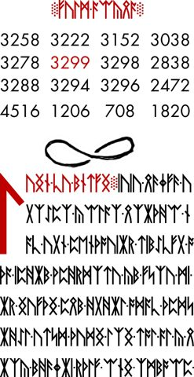
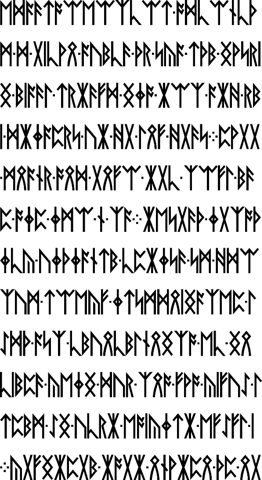
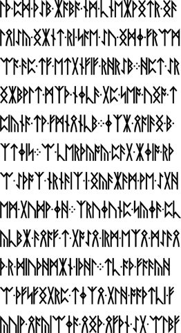
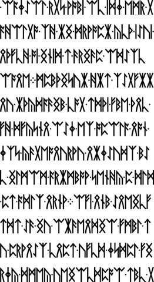
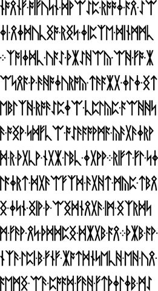
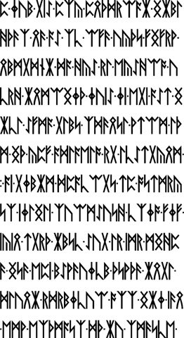
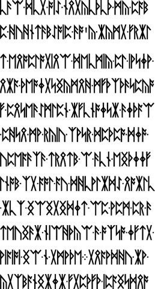
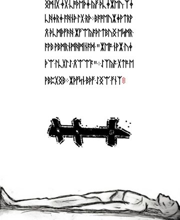

Möbius and the crossed-loop drawing
Find the LP2-15–22 grouping, inspect the loop beneath the number panel, and distinguish the visual name from a geometric claim.
On this page
The name Möbius (also written Mobius or Moebius) is used for the LP2-15–22 section. The most recognizable detail is the crossed, two-lobed drawing beneath the numbers on LP2-15. Start there if you remember an infinity-shaped symbol or a number square.

What the drawing shows
The two lobes cross, but their outlines have visible openings. The recorded inspection describes an open-loop drawing. “Infinity sign” is a useful way to find it; it does not establish an exact Unicode symbol or a number encoded by that symbol.
A Möbius strip is a surface made by joining the ends of a strip with a half-twist. An infinity sign is a two-dimensional figure-eight shape. Those are different objects: a crossed outline alone cannot demonstrate that a surface has a half-twist. A proposed Möbius interpretation needs to specify how the page’s lines, crossings, and gaps encode that surface.
Pages in the community grouping
The grouping runs from LP2-15 through LP2-22. It does not mean that every sheet contains the same motif, or that all eight use the same cipher. Select any preview to inspect that page’s record.








Following the numerical details
The panel contains sixteen numbers; 3299 is red. The panel article gives every value, row and column totals, and a reproducible calculation. For an idea involving prime positions or reversed digits, use prime indices and emirps before assigning those operations to the drawing.
There is also a literal MOBIUS in the known Some Wisdom reading. That textual occurrence is a separate piece of evidence. A shared name is a reason to compare the pages, not proof that one supplies a key for the other.
Sources and further reading
Cicada Solvers’ LP2 index supplies the community section names and ranges. The page links above provide original images, checksums, and pinned archive sources. Section names are descriptive navigation labels, not decrypted headings.
Return to the illustrated index to compare other manuscript motifs.
Manuscript pages discussed
LP2-15 · LP2-16 · LP2-17 · LP2-18 · LP2-19 · LP2-20 · LP2-21 · LP2-22